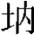
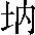

三十八章
上德不德，是以有德；下德不失德，是以無德。上德無爲而無以爲，下德爲之而有以爲。上仁爲之而無以爲，上義爲之而有以爲。上禮爲之而莫之應，則攘臂而扔之。故失道而後德，失德而後仁，失仁而後義，失義而後禮。夫禮者，忠信之薄而亂之首。前識者，道之華而愚之始。是以大丈夫處其厚，不居其薄；處其實，不居其華。故去彼取此。德者，得也。常得而無喪，利而無害，故以德爲名焉。何以得德？由乎道也。何以盡德？以無爲用。以無爲用則莫不載也，故物無焉，則無物不經，有焉則不足以免其生。是以天地雖廣，以無爲心；聖王雖大，以虚爲主。故曰以復而視，則天地之心見；[1]至日而思之，則先王之至睹也。故滅其私而無其身，則四海莫不瞻，遠近莫不至。殊其己而有其心，[2]則一體不能自全，肌骨不能相容。是以上德之人唯道是用，不德其德，無執無用，故能有德而無不爲。不求而得，不爲而成，故雖有德而無德名也。下德求而得之，爲而成之，則立善以治物，故德名有焉。求而得之，必有失焉；爲而成之，必有敗焉；善名生，則有不善應焉。故“下德爲之而有以爲”也。無以爲者，無所偏爲也。[3]凡不能無爲而爲之者，皆下德也，仁義禮節是也。將明德之上下，輒舉下德以對上德。
至於無以爲，極下德之量，[4]上仁是也，足及於無以爲而猶爲之焉。[5]爲之而無以爲，故有爲爲之患矣。本在無爲，母在無名。棄本捨母而適其子，功雖大焉，必有不濟；名雖美焉，僞亦必生。不能不爲而成，不興而治，則乃爲之，故有弘普博施仁愛之者，而愛之無所偏私，故“上仁爲之而無以爲”也。愛不能兼，則有抑抗正直而義理之者，[6]忿枉祐直，助彼攻此物事而有以心爲矣，故“上義爲之而有以爲”也。直不能篤，[7]則有游飾修文禮敬之者。尚好修敬，校責往來，則不對之間忿怒生焉，故“上禮爲之而莫之應，[8]則攘臂而扔之”。
夫大之極也，其唯道乎？自此已往，豈足尊哉？故雖盛業大富而有萬物，[9]猶各得其德而未能自周也。[10]故天不能爲載，地不能爲覆，人不能爲贍。萬物雖貴以無爲用，不能舍無以爲體也。不能舍無以爲體，則失其爲大矣，所謂“失道而後德”也。以無爲用，德其母，[11]故能己不勞焉而物無不理。下此已往，則失用之母，不能無爲而貴博施，不能博施而貴正直，不能正直而貴飾敬，所謂“失德而後仁，失仁而後義，失義而後禮”也。夫禮也，所始首於忠信不篤，通簡不暢，[12]責備於表，機微争制。夫仁義發於内，爲之猶僞，况務外飾而可久乎？故“夫禮者，[13]忠信之薄而亂之首”也。前識者，前人而識也，即下德之倫也。竭其聰明以爲前識，役其智力以營庶事，雖德其情，[14]奸巧彌密；雖豐其譽，愈喪篤實。勞而事昏，務而治薉，雖竭聖智而民愈害。捨己任物，則無爲而泰；守夫素樸，則不順典制。耽彼所獲，[15]棄此所守，“識道之華而愚之首”。故苟得其爲功之母，則萬物作焉而不辭也，萬事存焉而不勞也；用不以形，御不以名，故仁義可顯，[16]禮敬可彰也。夫載之以大道，[17]鎮之以無名，[18]則物無所尚，志無所營，各任其貞，事用其誠，則仁德厚焉，行義正焉，禮敬清焉。棄其所載，捨其所生，用其成形，役其聰明，仁則誠焉，[19]義其競焉，禮其争焉。故仁德之厚，非用仁之所能也；行義之正，非用義之所成也；禮敬之清，非用禮之所濟也。載之以道，統之以母，故顯之而無所尚，彰之而無所競。用夫無名，故名以篤焉；用夫無形，故形以成焉。守母以存其子，崇本以舉其末，則形名俱有而邪不生，大美配天而華不作，故母不可遠，[20]本不可失。仁義，母之所生，非可以爲母；形器，匠之所成，非可以爲匠也。捨其母而用其子，棄其本而適其末，名則有所分，形則有所止，雖極其大，必有不周，雖盛其美，必有患憂，功在爲之，豈足處也？
三十九章
昔之得一者，昔，始也。一，數之始而物之極也。各是一物之生，所以爲主也。物皆各得此一以成，[21]既成而舍一以居成，[22]居成則失其母，故皆裂、發、歇、竭、滅、蹶也。天得一以清，地得一以寧，神得一以靈，谷得一以盈，萬物得一以生，侯王得一以爲天下貞，其致之。各以其一致此清、寧、靈、盈、生、貞。天無以清將恐裂，用一以致清耳，非用清以清也。守一則清不失，用清則恐裂也。故爲功之母，不可捨也。是以皆無用其功，恐喪其本也。地無以寧將恐發，神無以靈將恐歇，谷無以盈將恐竭，萬物無以生將恐滅，侯王無以貴高將恐蹶。故貴以賤爲本，高以下爲基。是以侯王自謂孤、寡、不穀，此非以賤爲本邪？非乎？故致數譽無譽。[23]不欲琭琭如玉，珞珞如石。清不能爲清，盈不能爲盈，皆有其母以存其形。故清不足貴，盈不足多，[24]貴在其母，而母無貴形。貴乃以賤爲本，高乃以下爲基，故致數譽乃無譽也。玉石琭琭珞珞，[25]體盡於形，故“不欲”也。
四十章
反者道之動，高以下爲基，貴以賤爲本，有以無爲用，此其反也。動皆知其所無，[26]則物通矣，故曰“反者道之動”也。弱者道之用。柔、弱同通不可窮極。天下萬物生於有，有生於無。天下之物，皆以有爲生，有之所始，以無爲本。將欲全有，必反於無也。
四十一章
上士聞道，勤而行之；有志也。中士聞道，若存若亡；下士聞道，大笑之，不笑不足以爲道。故建言有之：“建”，猶“立”也。明道若昧，光而不耀。[27]進道若退，後其身而身先，外其身而身存。夷道若纇。纇，

也。[28]大夷之道，因物之性，不執平以割物。其平不見，乃更反若纇也。上德若谷，不德其德，無所懷也。太白若辱[29]，知其白，守其黑，大白然後乃得。廣德若不足，廣德不盈，廓然無形，不可滿也。建德若偷，偷，匹也。建德者，[30]因物自然，不立不施，故若偷匹。質真若渝。質真者不矜其真，故渝。[31]大方無隅，方而不割，[32]故無隅也。大器晚成，大器成天下，不持全别，[33]故必晚成也。大音希聲，聽之不聞名曰希，不可得聞之音也。[34]有聲則有分，有分則不宫而商矣；分則不能統衆，故有聲者非大音也。大象無形，有形則有分，有分者不温則炎，不炎則寒，故象而形者非大象。道隱無名。夫唯道，善貸且成。凡此諸善，皆是道之所成也。在象則爲大象，而“大象無形”；在音則爲大音，而“大音希聲”。物以之成，而不見其形，[35]故“隱而無名”也。貸之，非唯供其乏而已；一貸之則足以永終其德，故曰“善貸”也。成之不加機匠之裁，[36]無物而不濟其形，故曰“善成”。四十二章
道生一，一生二，二生三，三生萬物。萬物負陰而抱陽，冲氣以爲和。人之所惡，唯孤、寡、不穀，而王公以爲稱。故物或損之而益，或益之而損。萬物萬形，其歸一也。何由致一？由於無也。由無乃一，[37]一可謂無。已謂之一，豈得無言乎？[38]有言有一，非二如何？有一有二，遂生乎三。從無之有，數盡乎斯；過此以往，非道之流。故萬物之生，吾知其主，雖有萬形，冲氣一焉。[39]百姓有心，異國殊風，而得一者，王侯主焉。以一爲主，一何可捨？愈多愈遠，損則近之；損之至盡，乃得其極。既謂之一，猶乃至三，况本不一而道可近乎？“損之而益”，豈虚言也。人之所教，我亦教之。我之非強使人從之也，而用夫自然，[40]舉其至理，順之必吉，違之必凶。故人相教，違之必自取其凶也，亦如我之教人勿違之也。強梁者不得其死，吾將以爲教父。強梁則必不得其死。[41]人相教爲強梁，則必如我之教人不當爲強梁也。舉其強梁不得其死以教耶，若云順吾教之必吉也。故得其違教之徒，適可以爲教父也。
四十三章
天下之至柔，馳騁天下之至堅。氣無所不入，水無所不出於經。[42]無有入無間，吾是以知無爲之有益。虚無柔弱，無所不通。無有不可窮，至柔不可折。以此推之，故“知無爲之有益”也。不言之教，無爲之益，天下希及之。
四十四章
名與身孰親？尚名好高，其身必疏。身與貨孰多？貪貨無厭，其身必少。得與亡孰病？得多利而亡其身，何者爲病也？是故甚愛必大費，多藏必厚亡，甚愛，不與物通；多藏，不與物散。求之者多，攻之者衆，爲物所病，故“大費”、“厚亡”也。知足不辱，知止不殆，可以長久。
四十五章
大成若缺，其用不弊。隨物而成，不爲一象，故“若缺”也。[43]大盈若冲，其用不窮。大盈充足，[44]隨物而與，無所愛矜，故“若冲”也。大直若屈，隨物而直，直不在一，[45]故“若屈”也。大巧若拙，大巧因自然以成器，不造爲異端，故“若拙”也。大辯若訥。大辯因物而言，己無所造，故“若訥”也。躁勝寒，静勝熱，清靜爲天下正。躁罷然後勝寒，静無爲以勝熱，以此推之，則“清靜爲天下正”也。靜則全物之真，躁則犯物之性，故惟清靜乃得如上諸“大”也。
四十六章
天下有道，卻走馬以糞。天下有道，知足知止，無求於外，各修其内而已，故卻走馬以治田糞也。天下無道，戎馬生於郊。貪欲無厭，不修其内，各求於外，故戎馬生於郊也。[46]禍莫大於不知足，咎莫大於欲得。故知足之足，常足矣。
四十七章
不出户，知天下；不窺牖，見天道。事有宗而物有主，途雖殊而同歸也，[47]慮雖百而其致一也。道有大常，理有大致，執古之道可以御今，雖處於今可以知古始，[48]故不出户窺牖而可知也。其出彌遠，其知彌少。無在於一，而求之於衆也。道視之不可見，聽之不可聞，搏之不可得。[49]如其知之，不須出户；若其不知，出愈遠愈迷也。是以聖人不行而知，不見而名，得物之致，故雖不行而慮可知也；識物之宗，故雖不見而是非之理可得而名也。[50]不爲而成。明物之性，因之而已，故雖不爲而使之成矣。
四十八章
爲學日益，務欲進其所能，益其所習。爲道日損。務欲反虚無也。損之又損，以至於無爲。無爲而無不爲。有爲則有所失，故無爲乃無所不爲也。取天下常以無事，動常因也。及其有事，自己造也。不足以取天下。失統本也。
四十九章
聖人無常心，以百姓心爲心。動常因也。善者吾善之，不善者吾亦善之，各因其用，則善不失也。德善。無棄人也。[51]信者吾信之，不信者吾亦信之，德信。聖人在天下，歙歙爲天下渾其心。百姓皆注其耳目，[52]各用聰明。聖人皆孩之。皆使和而無欲，如嬰兒也。夫“天地設位，聖人成能，人謀鬼謀，百姓與能”者，[53]能者與之，資者取之，能大則大，資貴則貴。物有其宗，事有其主。如此則可冕旒充目而不懼於欺，[54]黈纊塞耳而無戚於慢，又何爲勞一身之聰明以察百姓之情哉？夫以明察物，物亦競以其明應之；以不信察物，物亦競以不信應之。[55]夫天下之心不必同，其所應不敢異，則莫肯用其情矣。甚矣，害之大也，莫大於用其明矣。夫在智則人與之訟，在力則人與之争。[56]智不出於人而立乎訟地，則窮矣；力不出於人而立乎争地，則危矣，未有能使人無用其智力乎己者也。[57]如此則己以一敵人，而人以千萬敵己也。若乃多其法網，煩其刑罰，塞其徑路，攻其幽宅，則萬物失其自然，百姓喪其手足，鳥亂於上，魚亂於下。[58]是以聖人之於天下，歙歙焉心無所主也，爲天下渾心焉，意無所適莫也。無所察焉，百姓何避？無所求焉，百姓何應？無避無應，則莫不用其情矣。人無爲捨其所能而爲其所不能，捨其所長而爲其所短，如此則言者言其所知，行者行其所能，百姓各皆注其耳目焉，吾皆孩之而已。
五十章
出生入死。出生地，入死地。生之徒，十有三；死之徒，十有三；人之生，動之死地，十有三。[59]夫何故？以其生生之厚。蓋聞善攝生者，陸行不遇兕虎，入軍不被甲兵，兕無所投其角，虎無所措其爪，兵無所容其刃。夫何故？以其無死地。十有三，猶云十分有三分。取其生道，全生之極，十分有三耳。取死之道，全死之極，十分亦有三耳。[60]而民生生之厚，更之無生之地焉。善攝生者，無以生爲生，[61]故無死地也。器之害者莫甚乎戈兵，獸之害者莫甚乎兕虎，而令兵戈無所容其鋒刃，虎兕無所措其爪角，斯誠不以欲累其身者也，何死地之有乎？夫蚖蟺以淵爲淺而鑿穴其中，鷹鸇以山爲卑而增巢其上，矰繳不能及，網罟不能到，可謂處於無死地矣，然而卒以甘餌乃入於無生之地，豈非生生之厚乎？故物苟不以求離其本，不以欲渝其真，雖入軍而不害，陸行而不可犯也。赤子之可則而貴，[62]信矣。
五十一章
道生之，德畜之，物形之，勢成之，物生而後畜，畜而後形，形而後成。何由而生？道也。何得而畜？德也。何由而形？物也。[63]何使而成？勢也。唯因也，故能無物而不形；唯勢也，故能無物而不成。凡物之所以生，功之所以成，皆有所由。有所由焉，則莫不由乎道也，故推而極之，亦至道也。隨其所因，故各有稱焉。[64]是以萬物莫不尊道而貴德。道者，物之所由也；德者，物之所得也。由之乃得，故曰不得不尊；[65]失之則害，不得不貴也。道之尊，德之貴，夫莫之命而常自然。“命”並作“爵”。[66]故道生之，德畜之。長之育之，亭之毒之，養之覆之。謂成其實，[67]各得其庇蔭，不傷其體矣。生而不有，爲而不恃，爲而不有。長而不宰，是謂玄德。有德而不知其主也，出乎幽冥，故謂之“玄德”也。
五十二章
天下有始，以爲天下母。善始之，則善養畜之矣。故天下有始，則可以爲天下母矣。既知其母，[68]復知其子；[69]既知其子，復守其母，没身不殆。[70]母，本也；子，末也。得本以知末，不捨本以逐末也。塞其兑，閉其門，兑，事欲之所由生；門，事欲之所由從也。終身不勤。無事永逸，故終身不勤也。開其兑，濟其事，終身不救。不閉其原而濟其事，[71]故雖終身不救。見小曰明，守柔曰強。爲治之功不在大。見大不明，見小乃明；守強不強，守柔乃強也。用其光，顯道以去民迷。復歸其明，不明察也。無遺身殃，是謂習常。[72]道之常也。
五十三章
使我介然有知，行於大道，唯施是畏。言若使我可介然有知，[73]行大道於天下，唯施爲之是畏也。[74]大道甚夷，而民好徑。言大道蕩然正平，而民猶尚捨之而不由，好從邪徑，况復施爲以塞大道之中乎？故曰“大道甚夷，而民好徑”。朝甚除，朝，宫室也。除，潔好也。田甚蕪，倉甚虚；朝甚除，則田甚蕪，倉甚虚，[75]設一而衆害生也。服文彩，帶利劍，厭飲食，財貨有餘，是謂盗夸。非道也哉！凡物不以其道得之，則皆邪也，邪則盗也。夸而不以其道得之，[76]盗夸也；貴而不以其道得之，竊位也，故舉非道以明。非道，則皆盗夸也。
五十四章
善建者不拔，[77]固其根而後營其末，故“不拔”也。善抱者不脱，不貪於多，齊其所能，故“不脱”也。子孫以祭祀不輟。子孫傳此道以祭祀，則“不輟”也。修之於身，其德乃真；修之於家，其德乃餘；以身及人也。修之身則真，修之家則有餘。修之不廢，所施轉大。[78]修之於鄉，其德乃長；修之於國，其德乃豐；修之於天下，其德乃普。故以身觀身，以家觀家，以鄉觀鄉，以國觀國，彼皆然也。以天下觀天下。以天下百姓心觀天下之道也。天下之道逆順吉凶，亦皆如人之道也。吾何以知天下然哉？以此。“此”，上之所云也。言吾何以得知天下乎？察己以知之，不求於外也，所謂不出户以知天下者也。
五十五章
含德之厚，比於赤子。蜂蠆虺蛇不螫，猛獸不據，攫鳥不搏。赤子無求無欲，不犯衆物，故毒螫人之物無犯之也。[79]含德之厚者不犯於物，故無物以損其全也。骨弱筋柔而握固，以柔弱之故，故握能周固。[80]未知牝牡之合而全作，作，長也。無物以損其身，故能全長也。[81]言含德之厚者，無物可以損其德、渝其真。柔弱不争而不摧折，皆若此也。精之至也。終日號而不嗄，無争欲之心，故終日出聲而不嗄也。和之至也。知和曰常，物以和爲常，故知和則得常也。知常曰明，不皦不昧，不温不凉，此“常”也。無形不可得而見，曰“明”也。益生曰祥，生不可益，益之則夭也。心使氣曰強。心宜無有，使氣則強。物壯則老，謂之不道，不道早已。
五十六章
知者不言，因自然也。言者不知。造事端也。塞其兑，閉其門，挫其鋭，含守質也。解其分，除争原也。和其光，無所特顯，則物無偏争也。[82]同其塵，無所特賤，則物無偏耻也。[83]是謂玄同。故不可得而親，不可得而疏；可得而親，則可得而疏也。不可得而利，不可得而害；可得而利，則可得而害也。不可得而貴，不可得而賤。可得而貴，則可得而賤也。故爲天下貴。無物可以加之也。[84]
五十七章
以正治國，以奇用兵，以無事取天下。以道治國，則國平。以正治國，則奇兵起也。[85]以無事，則能取天下也。上章云，其取天下者常以無事，及其有事，又不足以取天下也。[86]故以正治國則不足以取天下，而以奇用兵也。夫以道治國，崇本以息末。以正治國，立辟以攻末。本不立而末淺，民無所及，故必至於奇用兵也。[87]吾何以知其然哉？以此。天下多忌諱，而民彌貧；民多利器，國家滋昏；利器，凡所以利己之器也。民強則國家弱。人多伎巧，奇物滋起；民多智慧則巧僞生，巧僞生則邪事起。法令滋彰，盗賊多有。立正欲以息邪，而奇兵用；多忌諱欲以耻貧，而民彌貧；利器欲以強國者也，而國愈昏多。[88]皆捨本以治末，故以致此也。故聖人云，我無爲而民自化，我好靜而民自正，我無事而民自富，我無欲而民自樸。上之所欲，民從之速也。我之所欲唯“無欲”，而民亦無欲而“自樸”也。此四者，崇本以息末也。
五十八章
其政悶悶，其民淳淳；言善治政者，無形無名，無事無正可舉，[89]悶悶然卒至於大治，故曰“其政悶悶”也。其民無所争競，寬大淳淳，故曰“其民淳淳”也。其政察察，其民缺缺。立刑名，明賞罰，以檢奸僞，故曰“察察”也。殊類分析，民懷争競，故曰“其民缺缺”。禍兮，福之所倚；福兮，禍之所伏。孰知其極？其無正。言誰知善治之極乎？唯無可正舉，無可形名，[90]悶悶然而天下大化，是其極也。正復爲奇，以正治國，則便復以奇用兵矣，[91]故曰“正復爲奇”。善復爲妖。立善以和萬物，[92]則便復有妖之患也。[93]人之迷，其日固久。言人之迷惑失道固久矣，不可便正善治以責。是以聖人方而不割，以方導物，捨去其邪，[94]不以方割物，所謂“大方無隅”。廉而不劌，廉，清廉也。劌，傷也。以清廉清民，令去其邪，[95]令去其污，不以清廉劌傷於物也。直而不肆，以直導物，令去其僻，而不以直激沸於物也，[96]所謂“大直若屈”也。[97]光而不耀。以光鑑其所以迷，不以光照求其隱匿也，[98]所謂“明道若昧”也。此皆崇本以息末，不攻而使復之也。
【注释】
[1]語出《周易·復》彖辭“復其見天地之心乎”。王弼《周易注》曰：“復者，反本之謂也。凡動息則静，静非對動者也；語息則默，默非對語者也。然則天地雖大，富有萬物，雷動風行，運化萬變，寂然至無，是其本矣。故動息地中，乃天地之心見也。”
[2]《集注》本無“有其心”之“其”字。
[3]“偏”，《二十二子》本作“徧”。按，依文義當作“偏”。
[4]“下德”下，原衍“下”字，今據《集注》本校删。
[5]“足”，《集注》本作“是”。
[6]“直”，原作“真”，今據《集注》本校改。
[7]“篤”，《集注》本作“售”。
[8]“禮”，《二十二子》本作“德”。
[9]“雖”下，《二十二子》本無“德”字。“富”下，《集注》本無“而”字。
[10]“得”，《集注》本作“有”。“猶各得其德”以下，自“而未能自周也”至“萬物”共二十四字，《二十二子》本缺。按，《經典釋文·老子音義》於“敬校”與“治薉”之間出“爲贍”，説明陸德明所見本亦當有此二十四字。
[11]“德”上，《集注》本有“則”字。
[12]“暢”，原作“陽”，今據《集注》本校改。
[13]“夫”，《集注》本作“失”。
[14]德：通“得”，《集注》本作“得”。
[15]“耽”，原作“聽”，今據《經典釋文》校改。
[16]“故”下，《二十二子》本有“名”字，疑涉上文而衍。
[17]《莊子·天地》云：“夫道，覆載萬物者也，洋洋乎大哉。”
[18]三十七章經文云：“化而欲作，吾將鎮之以無名之樸。”
[19]“仁則誠焉”四字，《集注》本作“則仁失誠焉”五字。從文義看，以《集注》本爲安。
[20]遠《經典釋文》謂“一本作‘棄’。”
[21]《集注》本無“皆”字。
[22]“一”字原脱，今據《集注》本校補。
[23]兩個“譽”字，《二十二子》本皆作“輿”，注文同。
[24]《韓非子·五蠹》：“以其犯禁也罪之，而多其有勇也。”
[25]“珞珞”，《集注》本作“落落”。”琭琭珞珞”，河上公注谓“碌碌喻少，落落喻多；玉少故見贵，石多故見賤”。
[26]“知”，《集注》本作“之”。王弼《老子指略》云：“凡物之所以存，乃反其形；功之所以克，乃反其名。夫存者不以存爲存，以其不忘亡也；安者不以安爲安，以其不忘危也。”
[27]王弼注謂“以光鑑其所以迷，不以光照求其隱慝也”。
[28]“ ”，《廣雅·釋詁》謂“
”，《廣雅·釋詁》謂“

，深也”。[29]“太”，《二十二子》本作“大”。
[30]建：通“健”。
[31]渝：通“窬”，空無。按，經文“質真若渝”之“渝”，高亨先生謂“借爲窬。《説文》：‘窬，空中也。’”（高亨著，華鍾彦校《老子注譯》，河南人民出版社1980年版，第96頁）注文義同。
[32]王弼注曰：“以方導物，捨去其邪，不以方割物，所謂大方無隅。”
[33]陶鴻慶曰：“‘全’蓋‘分’字之誤。”言之有理。不持分别，即二十章注文所謂“無所别析”之意。
[34]陶鴻慶曰：“‘不可得聞之音也’句上，當有‘大音’二字。”可備參考。
[35]“其”下，原衍“成”字，據《集注》本校删。十四章王弼注謂“欲言無邪，而物由以成；欲言有邪，而不見其形”，亦可爲旁證。
[36]“加”，《二十二子》本作“如”。
[37]“由”，《集注》本作“因”。
[38]“已謂之一，豈得無言乎”，疑是後學對王弼注的批語誤竄入注文。此言當是針對“一可謂無”而來，意思是説，既已稱爲“一”，豈可同時以“無”言之乎？
[39]《説文》：“冲，涌摇也。”《莊子·田子方》：“至陰肅肅，至陽赫赫，肅肅出乎天，赫赫出乎地，兩者交通成和而物生焉。”
[40]陶鴻慶曰：“‘我之’下奪‘教’字，‘人’字又誤脱在下。當云：‘我之教人，非強使從之也。’”可備參考。
[41]強梁，河上公注謂“不信玄妙，背叛道德，不從經教，尚勢任力也”。
[42]“不出”下，《集注》本無“於經”二字。又，清人于鬯疑此句原作“氣無所不入，水無所不經”，下面經文“無有”上當有“出於”二字，此二字是正文而雜於注中者。他考證説，《淮南子·原道訓》引老聃之言，正作“出於無有，入於無閑”，是其明據。兩句對文，承上“至柔”而言，義甚明曉（參見于鬯《香草續校書》，中華書局，1963年版，第13頁），可備參考。
[43]《集注》本此條注文是：“學行大成，常如玷缺，謙則受益，故其材用無困弊之時。”與他本不同。缺《説文》謂“器破也”。
[44]“充”，《二十二子》本作“冲”。
[45]“不”，原誤作“下”，今據《二十二子》本校改。
[46]王弼把貪心與知足作爲判定天下“有道”、“無道”的標準。“天下有道，知足知止，無求於外，各修其内”是“有道”的表現，王弼在《周易注·履》卦中也指出道是“處虚”、“尚謙”、“惡盈”、“惡貪”的；而“貪欲無厭，不修其内，各求於外”則是“無道”的表現。
[47]“而同歸也”，《集注》本作“而其歸同也”。
[48]“執古之道可以御今，雖處於今可以知古始”，語出十四章經文“執古之道，以御今之有。能知古始，是謂道紀。”
[49]語出十四章經文“視之不見名曰夷，聽之不聞名曰希，搏之不得名曰微”。
[50]“名”，疑爲“明”之訛誤。
[51]語出二十七章經文“聖人常善救人，故無棄人”。
[52]《二十二子》本無“百姓皆注其耳目”七字。按，劉國鈞先生説：“予於故宫博物院圕，見進呈之聚珍本，用墨補書此七字，可見張之象本原有此句，聚珍本於排印時偶脱去，遂致沿誤。”（劉國鈞《老子王弼注校記》，載《國學季刊》第八卷第一期。）
[53]《集注》本無“者”字。
[54]“充”，《集注》本作“垂”。
[55]“以”下，《二十二子》本有“其”字。關於這句注文，陶鴻慶曰：“‘物亦競以其明應之’，‘應’當爲‘避’；‘以不信察物’，‘察’當爲‘求’。下文云：‘無所察焉，百姓何避？無所求焉，百姓何應？’承此言。”可備參考。
[56]“在”，義同“任”。《淮南子·詮言訓》云：“在智則人與之訟，在力則人與之争。”
[57]“未有能使人無用其智力乎己者也”，《集注》本作“未有能使人無用智者，未有能使人無用其智力於己者也”。《淮南子·詮言訓》云：“未有使人無智者，有使人不能用其智於己者也；未有使人無力者，有使人不能施其力於己者也。”
[58]《莊子·胠篋》謂“上誠好知而無道，則天下大亂矣。何以知其然邪？夫弓、弩、畢、弋、機變之知多，則鳥亂於上矣；鈎餌、罔罟、罾笱之知多，則魚亂於水矣”。
[59]“十”前，《二十二子》本有“亦”字。
[60]“十分亦有三耳”，《二十二子》本作“亦十分有三耳”。
[61]“無以生爲生”，原作“無以主爲生”，今據《古逸叢書》本校改。又，陶鴻慶曰：“‘無以生爲生’，下‘生’字不當有。七十五章經云：‘夫唯無以生爲者，是賢於貴生。’”可備參考。
[62]五十五章經文曰：“含德之厚，比於赤子。蜂蠆虺蛇不螫，猛獸不據，攫鳥不搏。”
[63]陶鴻慶曰：“於道言‘由’，於物不當言‘由’。本作‘何因而形？物也。’下文云‘唯因也，故能無物而不形’，承此言。”可備參考。
[64]“稱”，《集注》本作“道”。
[65]“失尊”二字，原誤倒，以致於文義不通，今據陶鴻慶説乙正。陶鴻慶曰：“‘失’‘尊’二字誤倒。原文當云：‘由之乃得，故不得不尊；失之則害，故不得不貴也。’”
[66]《集注》本在經文“道之尊，德之貴，夫莫之命而常自然”下謂“明皇、王弼二本‘命’並作‘爵’”，由此推斷，此語當是校者的按語誤入王弼注文者。
[67]“實”，《集注》本作“質”。
[68]“知”，《二十二子》本作“得”。
[69]“復”，《二十二子》本作“以”。
[70]“身”，原誤作“其”，今據《二十二子》本校改。
[71]原，“源”的本字。
[72]“謂”，《二十二子》本作“爲”。
[73]介，高亨先生以爲當讀爲“黠”（參見高亨著，華鍾彦校《老子注譯》，河南人民出版社1980年版，第116頁）。
[74]《集注》本無“之”字。施爲河上公注曰：“獨畏有所施爲，失道意。欲賞善，恐僞善生；欲信忠，恐詐忠起。”
[75]“虚”下，《集注》本有“矣”字。
[76]“得之”下，原無“盗夸也貴而不以其道得之”十一字，今據《集注》本校補。
[77]“者”字原脱，今據《二十二子》本校補。
[78]“轉”，《集注》本作“博”。
[79]“故毒螫人之物無犯之也”，原作“故毒蟲之物無犯之人也”，《集注》本作“毒螫之之物無犯於人也”。今據《集注》本及陶鴻慶説校改。陶鴻慶曰：“‘毒蟲之物’，疑當作‘毒螫人之物’。‘無犯之人’，‘人’字衍，即上句‘人’字誤奪在下者。”
[80]“周”，《集注》本作“堅”。周固：猶堅固。
[81]“全”，帛書本經文作“朘”。男嬰生殖器。
[82]“則物無偏争也”，《二十二子》本“物無”下有“所”字；《集注》本作“則物物無偏争也”。
[83]“則物無偏耻也”，《二十二子》本“物無”下有“所”字；《集注》本作“則物物無偏耻也”。
[84]“也”，《集注》本作“者”。
[85]“兵”，原作“正”，今據《集注》本校改。“也”，原誤作“九”，今據《集注》本校改。
[86]《集注》本無“又”字。
[87]“至於”下，疑脱“以”字，當作“故必至於以奇用兵也”。
[88]疑“多”字爲衍文，“而國愈昏”在句式上照應“而民彌貧”。又，陶鴻慶曰：“‘昏多’爲‘昏弱’之誤。上節‘國家滋昏’注云‘民強則國家弱’。”可備參考。
[89]“正”，《二十二子》本作“政”。
[90]“唯無可正舉，無可形名”，《集注》本作“唯無正可舉，無刑可名”。（按，《集注》本此條注文誤作“雱曰”，實當爲“弼曰”。因下面又有“雱曰”，一句經文下不當有兩“雱曰”。）
[91]《集注》本無“曰”字。
[92]“萬物”，《集注》本無“萬”字。
[93]“則便復有妖之患也”，《集注》本作“則便復有妖，妖佞之患也”。
[94]陶鴻慶曰：“‘捨去其邪’，依下二節注，當作‘令去其邪’。”言之有理。
[95]“清民”下，《集注》本無“令去其邪”四字。陶鴻慶以爲“涉上文而衍”。
[96]“沸”，《經典釋文》作“拂”。
[97]“大”字原脱，今據《集注》本校補。
[98]“匿”，《二十二子》本作“慝”。
本章完!